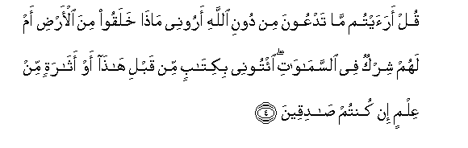
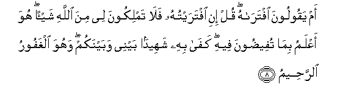
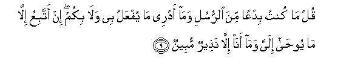

Sacred Texts Islam Index
Hypertext Qur'an Unicode Palmer Pickthall Yusuf Ali English Rodwell
Sūra XLVI.: Aḥqāf, or Winding Sand-tracts. Index
Previous Next

The Holy Quran, tr. by Yusuf Ali, [1934], at sacred-texts.com
Sūra XLVI.: Aḥqāf, or Winding Sand-tracts.
Section 1
1. Hā-Mīm.
2. Tanzeelu alkitabi mina Allahi alAAazeezi alhakeemi
2. The revelation
Of the Book
Is from God
The Exalted in Power,
Full of Wisdom.
3. Ma khalaqna alssamawati waal-arda wama baynahuma illa bialhaqqi waajalin musamman waallatheena kafaroo AAamma onthiroo muAAridoona
3. We created not
The heavens and the earth
And all between them
But for just ends, and
For a term appointed:
But those who reject Faith
Turn away from that
Whereof they are warned.

4. Qul araaytum ma tadAAoona min dooni Allahi aroonee matha khalaqoo mina al-ardi am lahum shirkun fee alssamawati eetoonee bikitabin min qabli hatha aw atharatin min AAilmin in kuntum sadiqeena
4. Say: "Do ye see
What it is ye invoke
Besides God? Show me
What it is they
Have created on earth,
Or have they a share
In the heavens?
Bring me a Book
(Revealed) before this,
Or any remnant of knowledge
(Ye may have), if ye
Are telling the truth!
5. Waman adallu mimman yadAAoo min dooni Allahi man la yastajeebu lahu ila yawmi alqiyamati wahum AAan duAAa-ihim ghafiloona
5. And who is more astray
Than one who invokes,
Besides God, such as will
Not answer him to the Day
Of Judgment, and who
(In fact) are unconscious
Of their call (to them)?
6. Wa-itha hushira alnnasu kanoo lahum aAAdaan wakanoo biAAibadatihim kafireena
6. And when mankind
Are gathered together
(At the Resurrection),
They will be hostile
To them and reject
Their worship (altogether)!
7. Wa-itha tutla AAalayhim ayatuna bayyinatin qala allatheena kafaroo lilhaqqi lamma jaahum hatha sihrun mubeenun
7. When Our Clear Signs
Are rehearsed to them,
The Unbelievers say,
Of the Truth
When it comes to them:
"This is evident sorcery!"

8. Am yaqooloona iftarahu qul ini iftaraytuhu fala tamlikoona lee mina Allahi shay-an huwa aAAlamu bima tufeedoona feehi kafa bihi shaheedan baynee wabaynakum wahuwa alghafooru alrraheemu
8. Or do they say,
"He has forged it"?
Say: "Had I forged it,
Then can ye obtain
No single (blessing) for me
From God. He knows best
Of that whereof ye talk
(So glibly)! Enough is He
For a witness between me
And you! And He is
Oft-Forgiving, Most Merciful."

9. Qul ma kuntu bidAAan mina alrrusuli wama adree ma yufAAalu bee wala bikum in attabiAAu illa ma yooha ilayya wama ana illa natheerun mubeenun
9. Say: "I am no bringer
Of new-fangled doctrine
Among the apostles, nor
Do I know what will
Be done with me or
With you. I follow
But that which is revealed
To me by inspiration;
I am but a Warner
Open and clear."
10. Qul araaytum in kana min AAindi Allahi wakafartum bihi washahida shahidun min banee isra-eela AAala mithlihi faamana waistakbartum inna Allaha la yahdee alqawma alththalimeena
10. Say: "See ye?
If (this teaching) be
From God, and ye reject it,
And a witness from among
The Children of Israel testifies
To its similarity
(With earlier scripture),
And has believed
While ye are arrogant,
(How unjust ye are!)
Truly, God guides not
A people unjust."